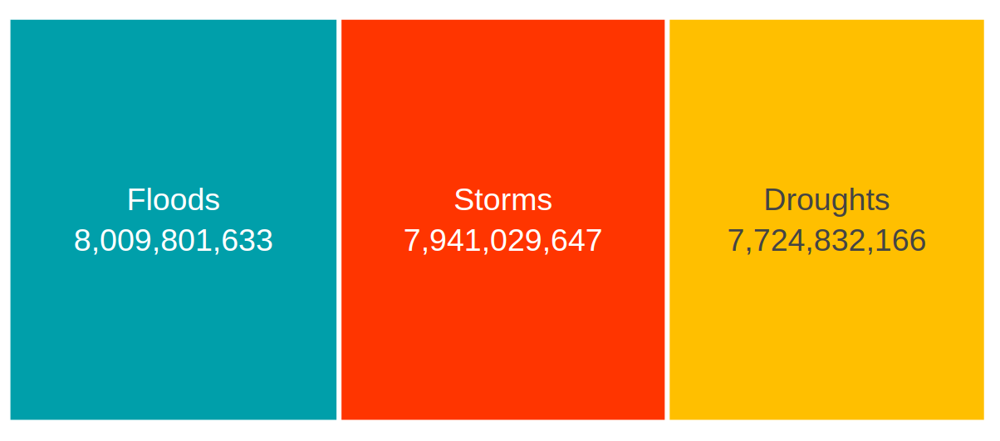
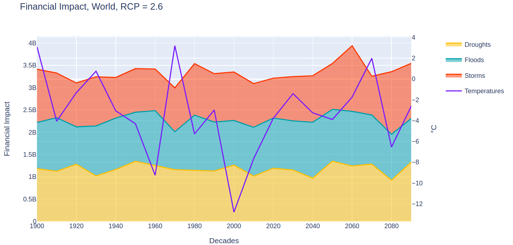
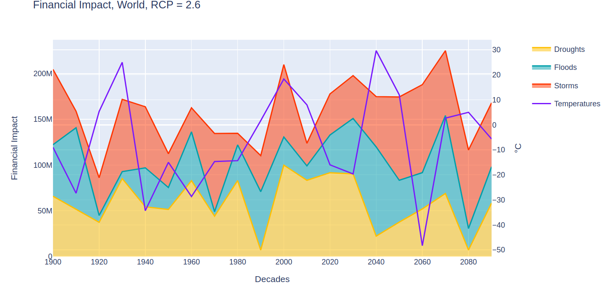

Data for Good #8 World Bank Dashboard
Morgan Davidson
Created: 2020-12-02 mer. 19:46
1 Agenda
- Agenda
- UI design & wireframing
- Definition and preparation of data input
- Geodata generation
- Implementing functionalities with Dash
- Implementing design with Dash & CSS
- Data service management
- Project documentation
- Demo
2 UI design & wireframing
We have divided dashboard design into 4 components :
| # | Component | Location | Status |
|---|---|---|---|
| 1 | World Map | Landing page | Done |
| 2 | World figures | Botton left of 1 | In progress |
| 3 | World figures focus | Clic on a 1 Region | In progress |
| 4 | Regional focus | clic on 2 | In progress |
2.1 World Map

2.2 World Figures

2.3 World Figures focus

2.4 Regional focus

3 Definition and preparation of data input
3.1 What our current data set looks like
| # | Decade |
UN_Geosheme_Subregion |
DT |
RCP |
FI |
HI |
DO |
°C |
|---|---|---|---|---|---|---|---|---|
| 1 | 1900 | Australia and New Zealand | Droughts | 97929068 | 538777 | 27 | 21 | |
| 2 | 1900 | Australia and New Zealand | Floods | 45575723 | 86978 | 84 | 3 | |
| 3 | 1900 | Australia and New Zealand | Storms | 15848786 | 683556 | 5 | -53 | |
| … | … | … | … | … | … | … | … | |
| 2705 | 2090 | Western Europe | Storms | 4.5 | 14359989 | 805245 | 40 | 24 |
| 2706 | 2090 | Western Europe | Storms | 6.0 | 43512633 | 236083 | 94 | -59 |
| 2707 | 2090 | Western Europe | Storms | 8.5 | 26957660 | 449505 | 36 | -8 |
3.2 Variables data type and description
| Variable name | Data type | Description/Example |
|---|---|---|
Decade |
int64 | 1900, 1910, …, 2080, 2090 |
UN_Geosheme_Subregion |
str | 'Australia and New Zealand', 'Caribbean', etc. |
Disaster_Type |
str | Either 'Floods', 'Droughts' or 'Storms' |
RCP |
float64 | NaN for the past, either 2.6, 4.5, 6.0 or 8.5 for the future |
DO |
int64 | Provides the number of disasters1. |
Human_Impact |
int64 | Provides the number of impacted people1. |
Financial_Impact |
int64 | Provides the financial impact1. |
°C |
int64 | Provides the temperature in Celsius degrees2 |
Geo |
GeoPandas | Geospatial data delimitating geoscheme sub regions on the map |
3.3 What we currently need from you
- Our current data input has been randomly generated the following script: https://github.com/dataforgoodfr/batch8_worldbank/blob/master/Dashboard/scripts/DataGeneration.ipynb
- We do now need the actual data to work more efficiently on the graph that will include in the dashboard.
- Got receive Floods hictoric data from Benoît
- We hope we can quicly have Tempest and Droughts historic data plus RCP temperatures
4 Geodata generation
NICOLAS will talk about
- his work on geodata and
- how he agregated countries into regions, so you can do the same to generate the input we need
- Link to Nicola's script: https://github.com/dataforgoodfr/batch8_worldbank/blob/master/Dashboard/scripts/ContourGeneration.ipynb
5 Implementing functionalities with Dash
MAHDI will talk about what we've done on implementing dashboard functionalities. https://github.com/dataforgoodfr/batch8_worldbank/blob/master/Dashboard/app.py
6 Implementing design with Dash & CSS
MARC will talk about what we've done on dashboard design implementation https://github.com/dataforgoodfr/batch8_worldbank/blob/master/Dashboard/assets/style.css
7 Data service management
MAHDI will share his work on heroku
8 Project documentation
Everthing we documented is here (documentation is still on going): https://github.com/dataforgoodfr/batch8_worldbank/tree/master/Dashboard